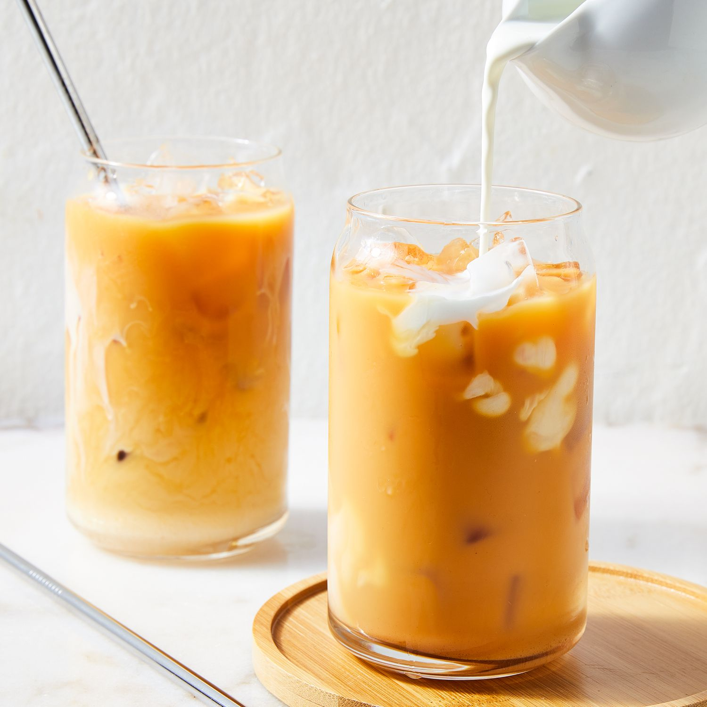

Thai Milk Tea Recipe

A simple thai iced tea recipe using thai tea mix tea bags from ChaTraMue. This recipe creates 1 serving.
Ingredients
- 1 thai mix tea bag/li>
- 100 grams fresh milk
- 10 grams condesnsed milk
- Brew tea bag in 100 grams hot water for 10 minutes
- Remove tea bag and add condensed milk. Stir until condensed milk is incorporated in drink./li>
- Add 100 grams cold water and 100 grams milk.
- Serve with ice